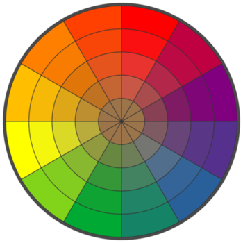
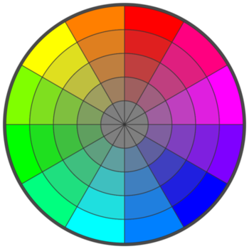
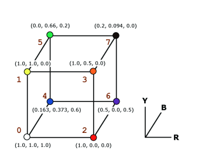

RGB, or red, green, and blue, are the primary colors of your computer, or more accurately your monitor.
The RGB color model is an additive color model where red, greed, and blue lights are added together to
create different colors. All colors added together (#ffffff, or 100% red, 100% green, and 100% blue) will result in white.
The CMYK color model, by contrast, is a subtractive color model using 3 colors, cyan, magenta, and yellow, and a 4th value for black. All colors added together, because it is a subtractive color model, will result in black. K, or black, is added for printing, as it easier (and cheaper) to attain a true black by not mixing all three other inks together.
The RYB color wheel uses red, yellow, and blue as the primary colors. This is the color model that is used for the RYB Color Picker. For details on how this model is rendered on the computer, so the How section below.
Which one looks better? The image on the right is a color wheel generated from the RGB color space, whereas the image on the left is run through the converter from RYB to RGB.
 
Colors on a computer are typical seen as hex, such as #ff00ff which represnts purple; Hex is used here a way of encoding RGB data (as explained above).
To convert this to RYB, a conversion is done that may seem counter intuitive. The color #00ff00, which represents 0% red, 100% green, and 0% blue in the
RGB color space (green) becomes the color #ff00ff, which represents 0% red, 100% yellow, 0% blue in the RYB color space (yellow). We then, must convert that
color, as it is given in RYB, to RGB.
The conversion algorithm can be seen in these lines of code, and is also summed up in in this paper, ryb.pdf by Dr. Nathan Gossett and Dr. Baoquan Chen of the University of Minnesota at Twin Cities
The image below shows the "Magic Colors" from the ryb2rgb algorithm in the above source code.
